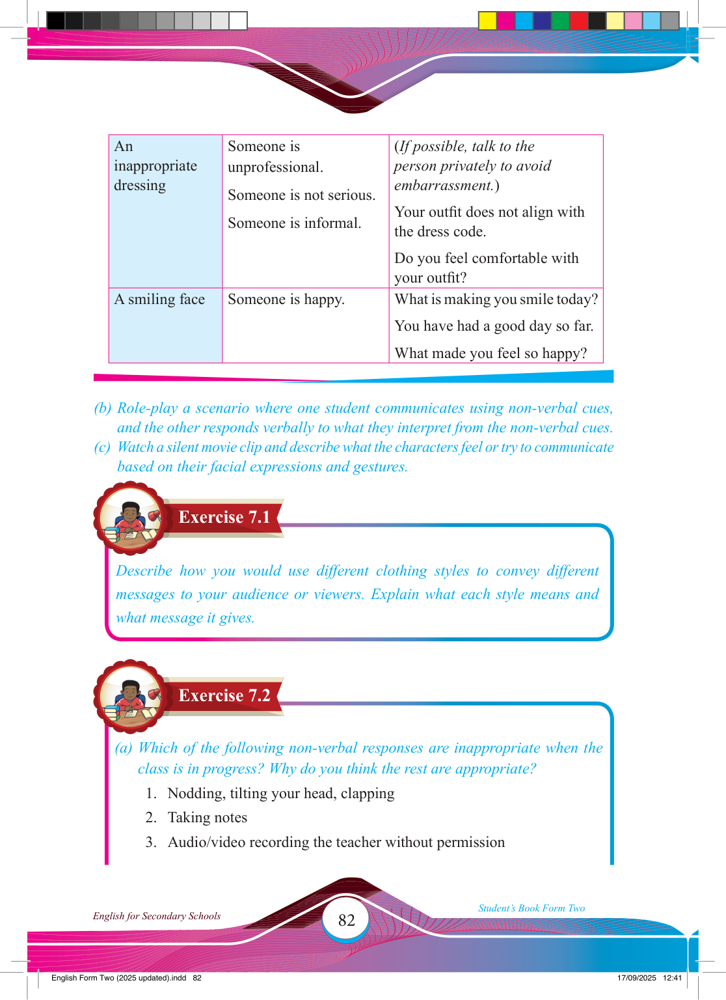

82
Student’s Book Form Two
English for Secondary Schools
Exercise 7.2
Exercise 7.1
An inappropriate dressing
Someone is unprofessional.
Someone is not serious.
Someone is informal.
(If possible, talk to the person privately to avoid embarrassment.)
Your outfi t does not align with the dress code.
Do you feel comfortable with your outfi t?
A smiling face
Someone is happy.
What is making you smile today?
You have had a good day so far.
What made you feel so happy?
(b) Role-play a scenario where one student communicates using non-verbal cues, and the other responds verbally to what they interpret from the non-verbal cues.
(c) Watch a silent movie clip and describe what the characters feel or try to communicate based on their facial expressions and gestures.
Describe how you would use different clothing styles to convey different messages to your audience or viewers. Explain what each style means and what message it gives.
(a) Which of the following non-verbal responses are inappropriate when the class is in progress? Why do you think the rest are appropriate?
1. Nodding, tilting your head, clapping
2. Taking notes
3. Audio/video recording the teacher without permission
17/09/2025 12:41